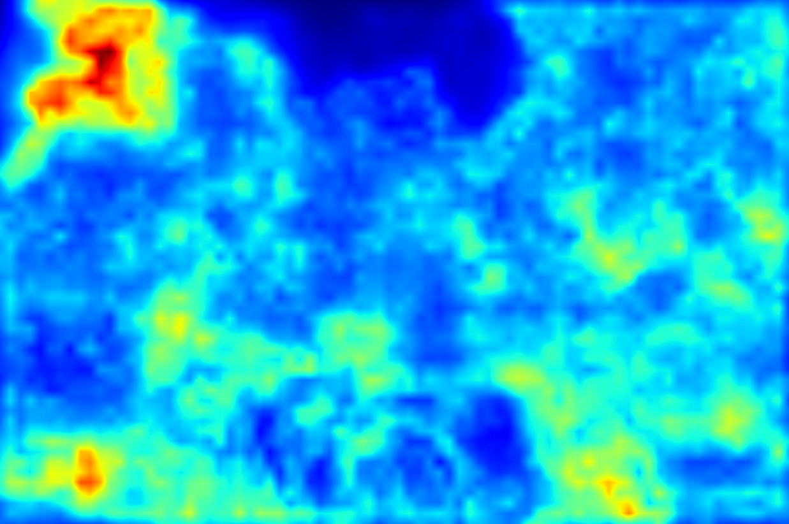
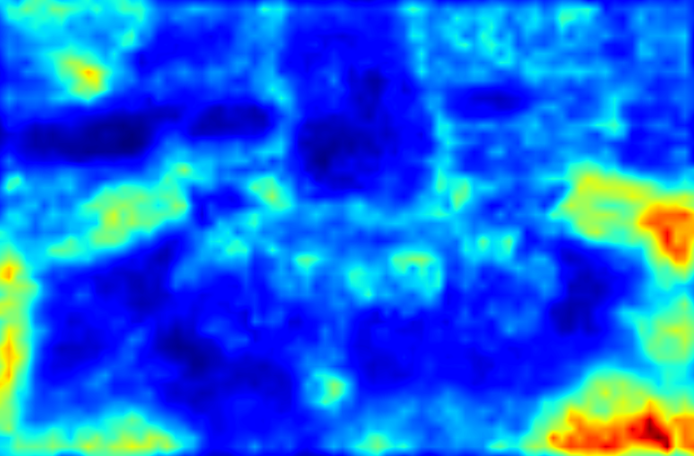
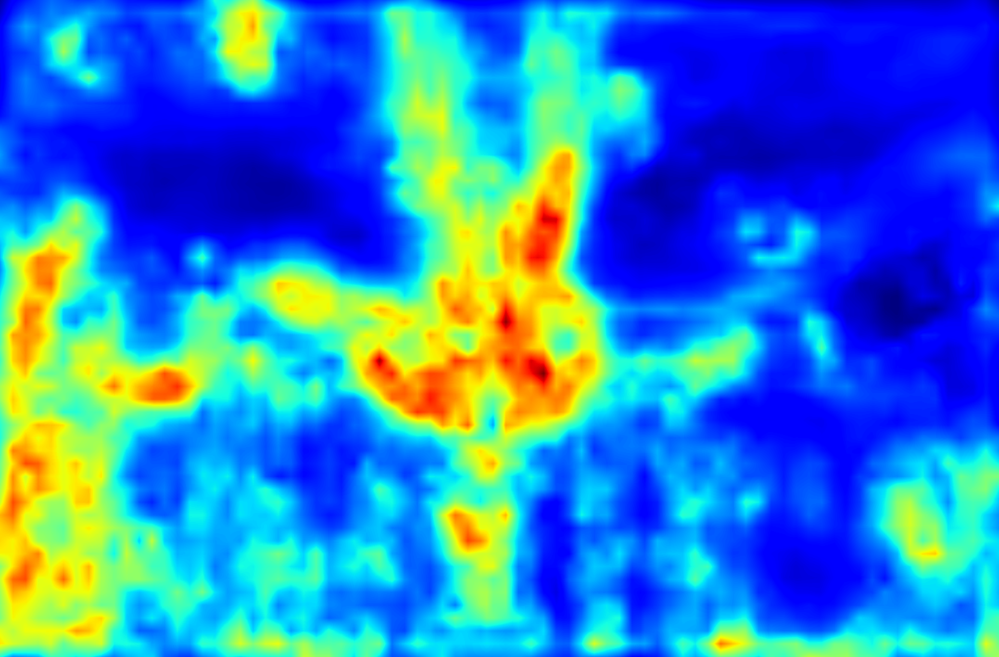

Puzzle Similarity: A Perceptually-Guided Cross-Reference Metric
for Artifact Detection in 3D Scene Reconstructions
International Conference on Computer Vision (ICCV) 2025.
- Nicolai Hermann
- Jorge Condor
- Piotr Didyk
IDSIA-USI

📝 TL;DR
We present PuzzleSim, a perceptually-guided metric for localizing artifacts in novel views of 3D scene reconstructions. Our method leverages unaligned training views to establish a scene-specific distribution, later used to identify poorly reconstructed regions in the novel views.
pip install puzzle_sim
Abstract
Modern reconstruction techniques can effectively model complex 3D scenes from sparse 2D views. However, automatically assessing the quality of novel views and identifying artifacts is challenging due to the lack of ground truth images and the limitations of no-reference image metrics in predicting reliable artifact maps. The absence of such metrics hinders assessment of the quality of novel views and limits the adoption of post-processing techniques, such as inpainting, to enhance reconstruction quality. To tackle this, recent work has established a new category of metrics (cross-reference), predicting image quality solely by leveraging context from alternate viewpoint captures. In this work, we propose a new cross-reference metric, Puzzle Similarity, which is designed to localize artifacts in novel views. Our approach utilizes image patch statistics from the training views to establish a scene-specific distribution, later used to identify poorly reconstructed regions in the novel views. Given the lack of good measures to evaluate cross-reference methods in the context of 3D reconstruction, we collected a novel human-labeled dataset of artifact and distortion maps in unseen reconstructed views. Through this dataset, we demonstrate that our method achieves state-of-the-art localization of artifacts in novel views, correlating with human assessment, even without aligned references. We can leverage our new metric to enhance applications like automatic image restoration, guided acquisition, or 3D reconstruction from sparse inputs.
Video
How PuzzleSim Works
PuzzleSim localizes artifacts in a novel rendered view without needing an aligned ground-truth image. Instead, it uses the training views of the same scene as a scene-specific reference distribution. The intuition is simple: if a patch in the novel view looks like patches that already appeared somewhere in the training views, it is probably plausible; if it looks unlike everything in that scene, it is likely an artifact.
We describe this with a puzzle analogy. Imagine cutting all training views into many perceptual puzzle pieces, shuffling them together, and trying to reassemble the novel view from that pile. Well-reconstructed regions should have matching pieces. Broken, blurry, or hallucinated regions should be hard to explain from the available pieces.
Use the original scene captures as unaligned references.
Run a pretrained CNN and treat each feature-map location as a patch embedding.
For every novel-view patch embedding, find its closest match anywhere in the reference set.
Low best-match similarity scores are likely artifacts.
In implementation, PuzzleSim normalizes CNN feature vectors and computes the best cosine-similarity match between each novel-view patch embedding and the reference feature distribution given by the training views. This produces one similarity map per selected CNN layer. These maps are upsampled to image resolution and averaged, so the final output combines fine local texture cues with slightly coarser perceptual context.
Qualitative Comparison
Figure 4 compares artifact-ridden novel views against several map-producing metrics and average human labels. PuzzleSim produces fine-grained maps that better separate localized artifacts from well-reconstructed regions.
Move the slider to compare the rendering with the selected map. Click a metric below each slider to swap the right side.



Application


Our metric can also be applied in automatic restoration of novel images from a reconstructed scene. Whenever it is possible to establish a visual distribution (e.g. we have a training dataset available), we can recursively use our metric to automatically identify visual outliers in novel views and remove them through neural inpainting.
Citation
Acknowledgements
We would like to thank Krzysztof Wolski for making their image segmentation tool available to us, Volodymyr Kyrylov for providing the idea and first prototype of the memory-efficient implementation, and Sophie Kergaßner for designing figures. This project has received funding from the European Research Council (ERC) under the European Union’s Horizon 2020 research and innovation program (grant agreement N° 804226 PERDY), from the Swiss National Science Foundation (SNSF, Grant 200502) and an academic gift from Meta.
The website template was borrowed from Michaël Gharbi and Ref-NeRF.